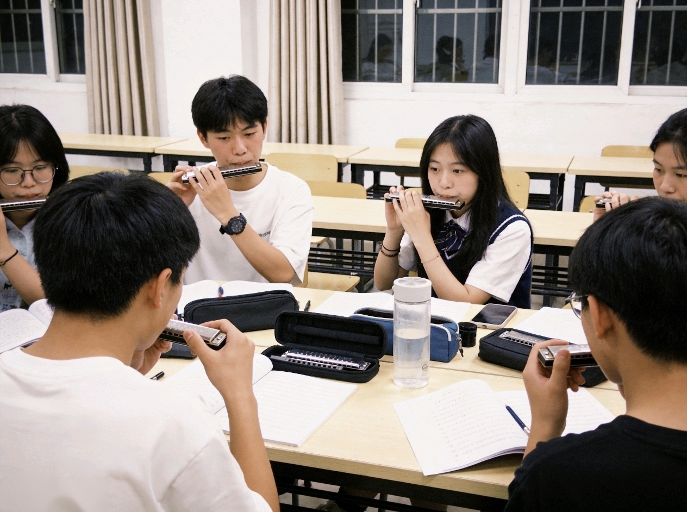

在校园里，总有这样一种声音：它不宏大，也不炫技，从教学楼的连廊、图书馆后的石阶、操场的看台边轻轻飘出来，像有人在低声哼一首很久以前学会的歌。那就是口琴。它大概是所有乐器里最不起眼的一件——巴掌大小，金属外壳，二十四孔或者十孔，装进外套口袋就能走，掏出来就能吹。可正是这件不起眼的乐器，把很多人和音乐之间那堵看不见的墙，悄悄拆掉了一块。
学一件乐器，通常要付出代价。钢琴要琴房、要时间、要一双被音阶磨得规矩的手；吉他要熬过指尖起茧的那几个星期，扫弦扫到隔壁敲墙；小提琴的前三个月，音准像一把钝锯，连自己都不好意思在宿舍里拉。口琴不太一样。它没有需要调音的弦，没有需要背熟的指法，也没有"你必须先练三年基本功"的门槛。你只要学会用嘴唇找到那一个孔，均匀地把气送进去，第一个音就成立了。它便宜——一支能正经吹奏的复音口琴不过几十上百块，比一双球鞋便宜；它便携——早八的路上、回家的火车上、实习宿舍的天台上，都能拿出来；它音量克制——刚好能被三五个人听见，又不会吵到隔壁自习的同学。这种"刚好"的分寸，是口琴最温柔的地方：它不要求你为它改变生活，只是安静地等在你的口袋里，等你有话说的时候。
口琴社最初的样子其实很小。几位喜欢在夜里吹琴的同学，在操场的看台上碰见了彼此，互相借琴，吹了几首大家都听过的老歌，然后说，不如我们组个社团吧。成立的初衷朴素得近乎固执：让那些"没学过乐器"的人，也能拥有一件真正属于自己的乐器。我们见过太多人在自我介绍里写"没有什么特长"，见过太多人以为音乐是属于少数人的天赋；而口琴社想做的，是把这句话改掉——不是所有人都要从小学琴，但所有人都可以从某个傍晚开始，学会吹一首完整的歌。所以社团的定位一直很清楚：它不是一个选拔乐团，不是比赛训练队，而是一个零门槛的校园音乐共同体。这里没有"谁吹得更好"的排行榜，只有"你今天有没有来"的问候。核心氛围可以用三个词概括：慢、稳、不催。慢，是因为音乐本来就需要时间；稳，是因为每周那一次团练从不缺席；不催，是因为我们相信兴趣比进度更重要，热爱比成绩更长久。
社团里流通的口琴主要有三种，各有各的脾气。最常见的是复音口琴，二十四孔、上下两排簧片，一个孔里同时响两个音，音色明亮，自带一层细微的波动，像夏天的阳光落在水面上。它是很多中国人最早听见的口琴声——老电影的主题曲、校园民谣、那些在广播里循环过的旋律，多半出自它。复音口琴入门最快，单音吹准之后就能成曲，进阶则有舌打伴奏、手震音这些讲究：舌头在琴格上打出"咚咚"的节拍，一只手开合制造颤音，练会了很有成就感。第二种是十孔布鲁斯口琴，只有十个孔，小巧到能握在掌心，音色沙哑、直接、带一点野气。它的看家本领是"压音"：靠改变口腔的形状，把原本没有的音"吸"出来，那个微微下滑的、像叹息一样的音，是蓝调和民谣的灵魂。学压音常常要练上几周，嘴唇磨得发麻，但第一次成功时那种惊喜，几乎每个人都会记很久。第三种是半音阶口琴，侧面有一个推键，按下就升高半音，十二个调都能吹，音域完整，是三者中最"正经"的一支。它适合古典改编、爵士、电影配乐，音色圆润干净，也更考验气息的稳定与乐句的处理。三种琴没有高下之分，只对应不同的表达：想吹一首熟悉的老歌，复音够了；想吹出心里那点涩，十孔更合适；想把一首复杂的曲子完整地吹下来，半音阶在等你。社团的琴柜里三种都有，新人可以一支一支试，试到那支"声音像自己"的为止。
零基础从来不是问题，问题是没人告诉你第一步怎么迈。社团的教学体系就是为这一步搭的。入学后的第一堂课，我们不讲乐理，只讲三件事：怎么握琴、嘴唇怎么含住一个孔、气怎么送。很多人第一次吹出来的不是音，是一声漏气的"呼"，全班都笑，学长也笑，然后把手放在你手背上，帮你把琴稍微往上抬一点，那个音就出来了。从单音到《小星星》通常只要一节课，从《小星星》到《送别》大约两三周，之后是《萱草花》《这世界那么多人》这类旋律线清晰的流行曲。教学分三层：入门班解决"能吹出音、能吹成句"，进阶班解决"节奏稳、换气顺、能跟着伴奏"，乐曲班则按兴趣分组，民谣组、影视组、古典组各自磨一首要拿去演出的曲子。为了不让任何人掉队，社团有学长帮扶制度：每位老社员带两到三位新人，约在没课的下午，找个空教室，一人一句地过。帮扶不是补课，更像是陪练——你吹错了，他不说"错了"，只说"再来一次，这次气别断"。每周还有一次固定团练，从七点到九点，前一个小时分声部练，中间半小时合，最后半小时自由，谁想吹什么就吹什么，有人吹流行，有人吹练习曲，声音叠在一起，乱七八糟，但很好听。
音乐在校园里的意义，往往不是"掌握一门技能"这么简单。艺术教育讲的美育，落到实处，是一个人开始能分辨什么是好听、什么是恰到好处、什么是克制。吹口琴的人会慢慢懂得：一个音不必用力过猛，一段旋律的呼吸比速度重要，收尾时的渐弱比高音更动人。这些感受会悄悄迁移到别处——写论文时懂得节奏，做展示时懂得停顿，与人相处时懂得留白。情绪上，口琴几乎是成本最低的出口。考砸了、失恋了、和室友闹了别扭，说不出口的话可以吹出来，一首曲子吹完，人往往就平静了。课余生活也因此被填得更满：不再是宿舍、教室、食堂的三点一线，而是多了一个"周三晚上有团练"的期待。至于交友，社团里最牢固的关系往往不是聊出来的，而是一起把一段和声磨对了、一起在演出前手忙脚乱地搬谱架、一起在雨里护着琴跑回教学楼，慢慢处出来的。
所以我们格外在意社团的文化。它必须包容：吹得跑调不会被嘲笑，中途放弃不会被追问，回来了也永远有位置。它必须无门槛：不看基础、不看专业、不看年级，甚至不需要你有过任何音乐经历。它必须不内卷：没有考核，没有排名，没有"这个学期必须过几级"的压力，唯一的标准是你自己开不开心。它必须热爱至上：我们相信，一个人愿意在忙得焦头烂额的学期里，每周留出两个小时坐在教室里吹琴，这份心意本身就值得被认真对待。
如果你也曾在某个傍晚，被一段不知从哪飘来的口琴声绊住脚步；如果你也曾在填表时，为"特长"那一栏的空白而停顿；如果你只是单纯地想在大学四年里，留下一点和分数无关、和别人无关、只属于自己的东西——那么欢迎你来。不用准备，不用试音，不用害怕自己五音不全。推开门，找个位置坐下，我们会递给你一支琴，告诉你把嘴唇放在第三个孔上，然后，轻轻地，吹一口气。剩下的，交给时间。
口琴社的活动体系，可以用一句话概括：每周有固定的去处，每学期有看得见的台阶，每年有值得期待的舞台。它不靠突击，也不靠热闹，而是把"吹琴"这件事安放进一整个学年，让它像一门不必考试的选修课，稳稳地占据你课表之外的那几个小时。
常规教学活动是全年不断线的主干。每学期开学第二周开课，每周一次，一次两小时，教室固定，提前一周在社群里公布。课程按学期排：秋季学期偏重基础与曲目积累，春季学期偏重合奏与舞台呈现。教学内容有讲义，也有录音——每节课后，主讲人会把当堂的示范音频和要点发到群里，方便没赶上的人补。讲义很朴素，一页是音阶位置图，一页是当周曲目的简谱，一页是常见问题，比如"为什么我吹到高音就破音""为什么换气总是接不上"。这些讲义一年年攒下来，成了社团最实用的一份家底。
| 口琴社 2026 年春季学期活动安排表 | |||
|---|---|---|---|
| 活动名称 | 时间 | 教室地点 | 面向人群 |
| 新成员见面会 | 第2周 周三19:00‑21:00 | 教学楼302教室 | 全体新社员 |
| 口琴基础教学公开课 | 第3周 周三19:00‑21:00 | 教学楼302教室 | 零基础同学 |
| 分级团练 | 每周周四晚 | 教学楼303教室 | 入门班 |
| 每周周五晚 | 教学楼304教室 | 进阶&乐曲班 | |
| 草坪音乐会（跨两列） | 图书馆前大草坪 | 全体社员及全校同学 | |
分级团练是教学的另一半。社团按进度把成员分成入门、进阶、乐曲三个层级，每周各有一次团练时段，时间错开，方便大家按自己的水平选择。入门团练以齐奏为主，先把手上的音吹齐、把节拍数稳；进阶团练开始分声部，一声部主旋律，二声部做和声与节奏型，练的是"听别人"的能力——合奏里最难的不是吹对，是吹得进去；乐曲团练则围绕具体的演出曲目，一遍遍抠开头、抠收尾、抠渐强渐弱的层次。团练有个不成文的规矩：迟到不批评，但要在最后帮忙收椅子；吹错了不停下来道歉，跟着往下走，因为合奏里断掉比错音更可惜。
如果把口琴社的一年剪成一段影像，它大概不会是那种节奏很快的片子。镜头会先落在秋天——招新的帐篷底下，桌上摆着一排琴，从二十四孔的复音到掌心大小的十孔，路过的人伸手摸一下，又不好意思地缩回去；穿着社服的学长笑着说，随便试，吹不出声音也没关系。然后是冬天，教学楼四楼那间朝北的空教室，暖气片在角落里咔咔地响，窗玻璃上蒙着一层水汽，十几个人围坐成一圈，每人手里一支琴，吹同一段简单的旋律，声音参差不齐，却意外地和谐。再往后是春天，草坪返青，树影在谱架上晃，有人躺着吹，有人蹲着听。最后是夏天，报告厅的灯光亮起来，一切嘈杂在第一个音响起时安静下来。这段影像一年一年地拍，主角换了一届又一届，可它看起来总是很像。
点击第一张图片查看活动详情介绍：

每个社团都有自己的一本年鉴，但真正让年鉴有重量的，从来不是活动数量，而是人的故事。口琴社里没有所谓的天才叙事，多的是普通人一点一点挪动自己的痕迹：有人从不敢在别人面前发出声音，到能在草坪上吹完一整首；有人只是喜欢听歌，最后成了合奏里那个稳得住节奏的人；有人待了四年，把当年别人教给他的东西，又原样教给了下一届。下面这三个故事，来自不同年级、不同专业、不同起点的社员。它们并不传奇，甚至有些笨拙，但正因为笨拙，才显得真实。
第一个故事来自大一新生小满，新闻专业，从小到大没有学过任何乐器。她来社团的原因很实际：室友拉她一起去招新摊位上凑热闹，她被塞了一支琴，胡乱吹了一下，发出一声很难听的响，周围人没笑她，反而有人鼓掌说"有声音了"。那天她填了报名表，回去之后却后悔了三个星期，因为她实在想不出一个"连竖笛都吹不好的人"能在这里待多久。第一次团练她坐在最后一排，把琴横在腿上不敢举起来，怕吹错。学长没有催她，只是每次经过时问一句"要不要试试这一句"。她试了，声音小得像蚊子。真正让她变化的是一件很小的事：某个下雨的下午，她一个人在空教室里练《送别》，怎么吹都接不上第二句，急得眼睛发酸。一位老社员推门进来拿东西，听见了，就坐下来陪她吹了四十分钟，一句一句地拆，最后两个人一起把那首曲子吹完了。她说那是她上大学以来第一次觉得"我也可以"。后来她成了团练里最早到的人之一，会在群里主动问"今天有人练琴吗"。期末的汇报演出，她吹的是二声部，位置在舞台右侧靠后的地方，台下可能没几个人看清她的脸，但她吹完那一刻，手是抖的，心是稳的。
第二个故事的主角是陈屿，机械专业大二，一个典型的"喜欢听歌但没基础"的人。他的歌单里存了八百多首，从民谣到后摇都有，却从来没碰过乐器，理由也很常见：小时候家里觉得学琴没用，长大后又觉得起步太晚。加入社团的第一学期，他属于那种"每节课都来，但进步很慢"的成员，单音吹得还行，一进合奏就乱，节拍总是抢半拍。他自己也急，问学长是不是没有天分。学长说，你不是没天分，你是太想吹对，反而不敢听别人。这句话他记了很久。第二学期他换了方式：练琴时先把手机里的伴奏开起来，跟着走，不追求吹对每个音，只追求不掉队。慢慢地，他发现自己能听出第二声部在哪里进了，能在一段和声里找到自己的位置。他开始参加草坪音乐会，从站在最边上吹长音，到能独立负责一段间奏；也开始在沙龙上分享自己喜欢的曲子，讲一首歌为什么好听，讲得比吹得还投入。他现在的身份是进阶班的声部长，每周负责把二声部的谱子标好发到群里。他说，社团给他的不是一个"技能"，而是一个圈子——一群会在深夜讨论某首歌的间奏到底该怎么处理的人，一群愿意为了一个和弦改三遍的人。这大概就是"同好"两个字的分量。
第三个故事属于周叙，大四，社团里待得最久的人之一。他大一入学那年在招新摊位上第一次摸到十孔口琴，被"压音"这个说法迷住，回去查了整整一周的资料。头两年他是最普通的那种社员：来团练、来沙龙、演出时站在中间偏右的位置，不算突出，但从没缺席。变化的起点是社团的一次人员紧张——零基础课堂缺一个助教，老社长问他愿不愿意试试。他答应了，第一次上课前把讲稿写了三遍，还在宿舍对着镜子讲了一遍，结果上台还是紧张，把"嘴唇要放松"说成了"嘴巴要放松"，底下一群新生笑得前仰后合，他也就笑了，然后接着讲。他慢慢发现，教别人比自己做要难得多：你得知道对方卡在哪里，得把一个自己早就自动化了的动作拆成能听懂的话，得在对方连续失败六次之后还能说"再来一次"。这几年他带过二十多个新人，记得每个人的第一首曲子：有人是《小星星》，有人是《虫儿飞》，有人固执地要从《卡农》开始。他也送走了一批人，有的毕业去了别的城市，有的工作了还偶尔在群里发一段自己吹的音频。今年九月，他在社团的旧物箱里翻到自己大一时写的练琴笔记，扉页上写着一行字："希望四年后还能吹琴。"他把本子合上，放回箱子里，然后在招新的报名表上，写下了新一批名字中的第一个。他说，社团给他最长久的东西，不是会吹几首曲子，而是一段可以一直延续下去的关系——和琴的关系，和人的关系，和那段日子的关系。
这三个人，起点不同，走得快慢也不同，但他们身上有某种共同的东西：都曾经不太确定自己行不行，都在某个具体的下午被某个人耐心地对待过，然后慢慢把这份耐心接了过来。口琴社的故事其实一直是这么写下去的——不是靠谁特别厉害，而是靠一届人把琴递给下一届人，把"没关系，慢慢来"这句话，一遍一遍地说下去。